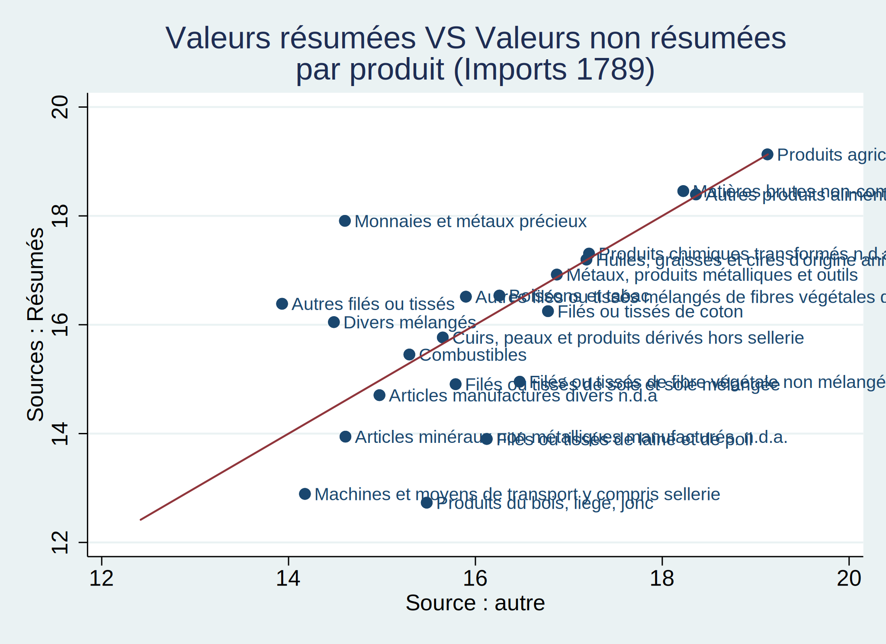
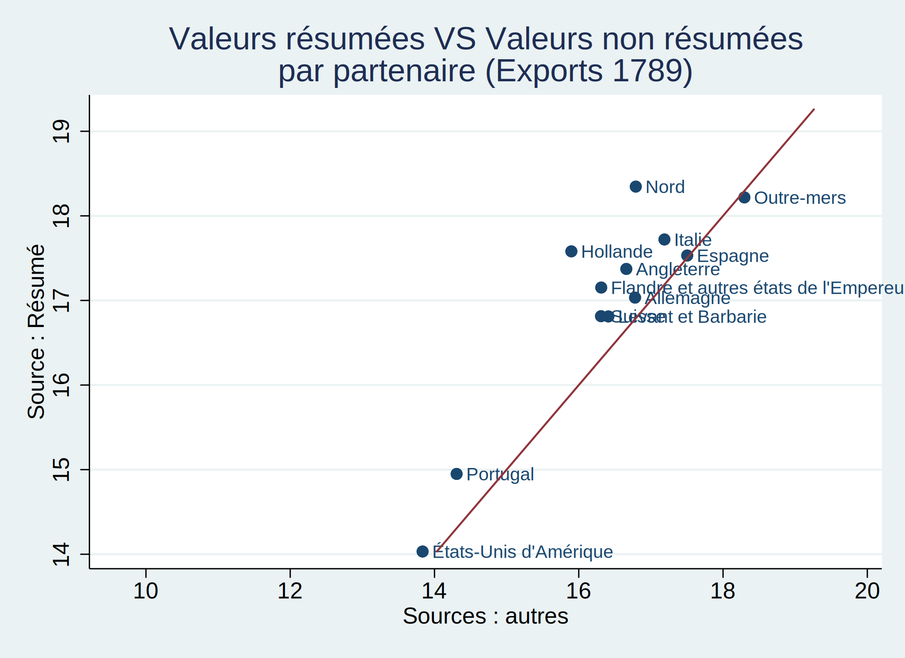
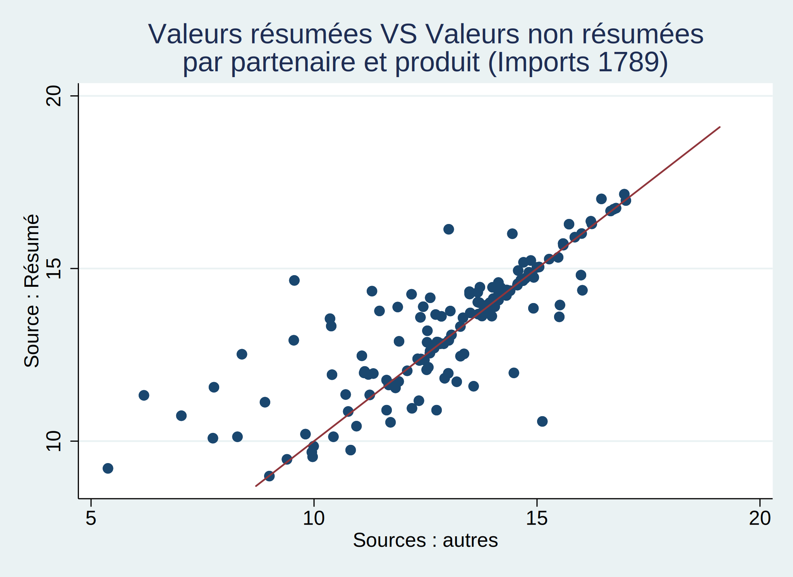

Nous disposons de différentes sources sur les données du commerce au XVIII ème siècle et nous essayons de tester leur robustesse en les comparant entre elles.
Nous tentons d’identifier quels sont les produits pour lesquels les valeurs des exportations/importations diffèrent d’une base de donnée à l’autre. Ceci va nous permettre d’identifier ainsi que de quantifier les erreurs dans la retranscriptions des données concernant la valeurs des exportations et des importations. Pour cela nous comparons les valeurs des exportations et des importations provenant d’une source résumée et celles provenant d’une source non résumées.
. if “`c(username)’” == “paulchagnaud” import delimited “/Users/paulchagnaud/Desktop/bdd courante.csv”, clear ca
se(preserve)
. if “`c(username)’” == “guillaumedaudin” use "~/Documents/Recherche/Commerce International Français XVIIIe.xls/
Balance du commerce/Retranscriptions_Commerce_France/Données Stata/bdd courante.dta", clear
. . if “`c(username)’” == “guillaumedaudin” global dir “~/Répertoires Git/StagePaulChagnaud”
. if “`c(username)’” == “paulchagnaud” global dir “~/StagePaulChagnaud/”
Nous nous intéressons uniquement aux observations de l’année 1789 et nous choisissons d’exclure les observations pour lesquels la France est un partenaire commercial.
. keep if year == 1789 (526,759 observations deleted)
. generate base_pas_résumé = 1 if source_type != “Résumé” (1,810 missing values generated)
. replace base_pas_résumé = 0 if source_type == “Résumé” (1,810 real changes made)
. preserve
. tab partner_grouping
partner_grouping | Freq. Percent Cum.
—————————————+———————————– ???? | 3 0.01 0.01 Afrique | 1,168 3.81 3.82 Allemagne | 1,662 5.43 9.25 Amériques | 3,876 12.65 21.90 Angleterre | 2,178 7.11 29.01 Asie | 247 0.81 29.82 Divers | 108 0.35 30.17 Espagne | 2,372 7.74 37.91 Flandre et autres états de l’Empereur | 2,684 8.76 46.67 France | 5,652 18.45 65.12 Hollande | 1,765 5.76 70.88 Italie | 3,497 11.42 82.30 Levant et Barbarie | 470 1.53 83.83 Monde | 67 0.22 84.05 Nord | 2,304 7.52 91.57 Outre-mers | 129 0.42 91.99 Portugal | 407 1.33 93.32 Suisse | 1,490 4.86 98.19 [vide] | 71 0.23 98.42 États-Unis d’Amérique | 485 1.58 100.00 —————————————+———————————– Total | 30,635 100.00
. drop if partner_grouping == “France” (5,652 observations deleted)
. replace export_import = “Exports” if export_import == “Exportations” (403 real changes made)
. collapse (sum) value, by (base_pas_résumé export_import product_sitc_FR)
. br
. sort export_import product_sitc_FR
. br
. format value %12.0gc
. br
. reshape wide value, i(product_sitc_FR export_import) j(base_pas_résumé) (j = 0 1)
. gen log_value0 = log(value0) (3 missing values generated)
. gen log_value1 = log(value1)
. twoway (scatter log_value0 log_value1 if export_import==“Imports”, mlabel(product_sitc_FR)) (line log_value0 lo
g_value0), name(graph3, replace) title(“Valeurs résumées VS Valeurs non résumées” " par produit (Imports 1789)") legend(off) xtitle(Source : autre) ytitle(Sources : Résumés) xscale(range(12 20))
. graph export “$dir/Valeurs_résumées_VS_Valeurs_non_résumées_par_produit_Imports_1789.png”, replace

Nous constatons que les différentes sources ne semblent pas concorder sur la valeur des importations de nombreux produits. Ceci est particulièrement vrai pour les “Monnaies et métaux précieux” ou encore pour les “Produits du bois, liège, jonc”.
. twoway (scatter log_value0 log_value1 if export_import==“Exports”, mlabel(product_sitc_FR)) (line log_value0 lo
g_value0), name(graph3, replace) title(“Valeurs résumées VS Valeurs non résumées” " par produit (Exports 1789)" ) legend(off) xtitle(Sources : autres) ytitle(Source Résumé) xscale(range(12 20))
. graph export “$dir/Valeurs_résumées_VS_Valeurs_non_résumées_par_produit_Exports_1789.png”, replace
Malgré une légère amélioration par rapport aux importations, nous constatons que les différentes sources ne semblent pas concorder sur la valeur des exportations de nombreux produits. Ceci est particulièrement vrai pour les “Filés ou tissés de fibre végétale non mélangés” ou encore pour les “Autres filés ou tissés mélangés de fibre végétales dont toiles”.
Nous tentons d’identifier quels sont les partenaires commerciaux pour lesquels les valeurs des exportations/importations diffèrent d’une base de donnée à l’autre. Ceci va nous permettre d’identifier ainsi que de quantifier les erreurs dans la retranscriptions des données concernant la valeurs des exportations et par importations. Pour cela nous comparons les valeurs des exportations et des importations provenant d’une source résumée et celles provenant d’une source non résumées.
Nous nous intéressons uniquement aux observations de l’année 1789 et nous choisissons d’exclure les observations pour lesquels la France est un partenaire commercial. De plus, nous choisissons d’exclure les observations pour lesquels les produits importés sont des “Monnaies et métaux précieux” puisque ce type de bien ne peut être comptabilisé comme faisant parti des échanges commerciaux entre deux pays.
. restore
. tab partner_grouping
partner_grouping | Freq. Percent Cum.
—————————————+———————————– ???? | 3 0.01 0.01 Afrique | 1,168 3.81 3.82 Allemagne | 1,662 5.43 9.25 Amériques | 3,876 12.65 21.90 Angleterre | 2,178 7.11 29.01 Asie | 247 0.81 29.82 Divers | 108 0.35 30.17 Espagne | 2,372 7.74 37.91 Flandre et autres états de l’Empereur | 2,684 8.76 46.67 France | 5,652 18.45 65.12 Hollande | 1,765 5.76 70.88 Italie | 3,497 11.42 82.30 Levant et Barbarie | 470 1.53 83.83 Monde | 67 0.22 84.05 Nord | 2,304 7.52 91.57 Outre-mers | 129 0.42 91.99 Portugal | 407 1.33 93.32 Suisse | 1,490 4.86 98.19 [vide] | 71 0.23 98.42 États-Unis d’Amérique | 485 1.58 100.00 —————————————+———————————– Total | 30,635 100.00
. drop if partner_grouping == “France” (5,652 observations deleted)
. drop if product_sitc_FR == “Monnaies et métaux précieux” (28 observations deleted)
. replace export_import = “Exports” if export_import == “Exportations” (403 real changes made)
. replace partner_grouping = “Outre-mers” if partner_grouping == “Afrique” | partner_grouping == “Asie” | partner_
grouping == “Amériques” (5,283 real changes made)
. collapse (sum) value, by (base_pas_résumé export_import partner_grouping)
. sort export_import partner_grouping
. format value %15.0fc
. reshape wide value, i(partner_grouping export_import) j(base_pas_résumé) (j = 0 1)
. gen log_value0 = log(value0) (8 missing values generated)
. gen log_value1 = log(value1)
. twoway (scatter log_value0 log_value1 if export_import==“Imports” & log_value0!=., mlabel(partner_grouping)) (l
ine log_value0 log_value0), name(graph3, replace) title(“Valeurs résumées VS Valeurs non résumées” " par parten aire (Imports 1789)") legend(off) xtitle(Sources : autres) ytitle(Source : Résumé) xscale(range(14 20))
. graph export “$dir/Valeurs_résumées_VS_Valeurs_non_résumées_par_partenaire_Imports_1789.png”, replace

Nous constatons que les différentes sources ne semblent concorder sur la valeur des importations de nombreux partenaires commerciaux. Néanmoins les données concernant l’Espagne et l’Allemagne semblent être les moins fiables.
. twoway (scatter log_value0 log_value1 if export_import==“Exports”, mlabel(partner_grouping)) (line log_value0 l
og_value0), name(graph3, replace) title(“Valeurs résumées VS Valeurs non résumées” " par partenaire (Exports 178 9)") legend(off) xtitle(Sources : autres) ytitle(Source : Résumé) xscale(range(14 20))
. graph export “$dir/Valeurs_résumées_VS_Valeurs_non_résumées_par_partenaire_Exports_1789.png”, replace

Nous constatons que les différentes sources ne semblent pas concorder sur la valeur des exportations de la plupart des partnaires commerciaux. Ceci est particulièrement vrai pour le Nord, la Hollande et la Flandre.
Nous tentons d’identifier quels sont les produits par partenaire commercial pour lesquels les valeurs des exportations/importations diffèrent d’une base de donnée à l’autre. Ceci va nous permettre d’identifier ainsi que de quantifier les erreurs dans la retranscriptions des données concernant la valeurs des exportés et importés. Pour cela nous comparons les valeurs des exportations et des importations provenant d’une source résumée et celles provenant d’une source non résumées.
Nous décidons de nous intéresser uniquement aux observations de l’année 1789 et nous choisissons d’exclure les observations pour lesquels la France est un partenaire commercial.
. if “`c(username)’” == “paulchagnaud” import delimited “/Users/paulchagnaud/Desktop/bdd courante.csv”, clear ca
se(preserve)
. if “`c(username)’” == “guillaumedaudin” use "~/Documents/Recherche/Commerce International Français XVIIIe.xls/
Balance du commerce/Retranscriptions_Commerce_France/Données Stata/bdd courante.dta", clear
. keep if year == 1789 (526,759 observations deleted)
. generate base_pas_résumé = 1 if source_type != “Résumé” (1,810 missing values generated)
. replace base_pas_résumé = 0 if source_type == “Résumé” (1,810 real changes made)
. tab partner_grouping
partner_grouping | Freq. Percent Cum.
—————————————+———————————– ???? | 3 0.01 0.01 Afrique | 1,168 3.81 3.82 Allemagne | 1,662 5.43 9.25 Amériques | 3,876 12.65 21.90 Angleterre | 2,178 7.11 29.01 Asie | 247 0.81 29.82 Divers | 108 0.35 30.17 Espagne | 2,372 7.74 37.91 Flandre et autres états de l’Empereur | 2,684 8.76 46.67 France | 5,652 18.45 65.12 Hollande | 1,765 5.76 70.88 Italie | 3,497 11.42 82.30 Levant et Barbarie | 470 1.53 83.83 Monde | 67 0.22 84.05 Nord | 2,304 7.52 91.57 Outre-mers | 129 0.42 91.99 Portugal | 407 1.33 93.32 Suisse | 1,490 4.86 98.19 [vide] | 71 0.23 98.42 États-Unis d’Amérique | 485 1.58 100.00 —————————————+———————————– Total | 30,635 100.00
. drop if partner_grouping == “France” (5,652 observations deleted)
. replace export_import = “Exports” if export_import == “Exportations” (403 real changes made)
. gen part_x_prod = partner_grouping + " " + product_sitc_FR
. collapse (sum) value, by (base_pas_résumé export_import part_x_prod product_sitc_FR partner_grouping)
. sort export_import part_x_prod
. format value %12.0gc
. reshape wide value, i(export_import part_x_prod) j(base_pas_résumé) (j = 0 1)
. gen log_value0 = log(value0) (267 missing values generated)
. gen log_value1 = log(value1) (39 missing values generated)
. br
. twoway (scatter log_value0 log_value1 if export_import==“Imports”) (line log_value0 log_value0), name(graph3, r
eplace) title(“Valeurs résumées VS Valeurs non résumées” " par partenaire et produit (Imports 1789)") legend(of f) xtitle(Sources : autres) ytitle(Source : Résumé) /xscale(log) yscale(log)/
. graph export “$dir/Valeurs_résumées_VS_Valeurs_non_résumées_par_partenaire_et_par_produit_Imports_1789.png”, rep
lace

. twoway (scatter log_value0 log_value1 if export_import==“Exports”) (line log_value0 log_value0), name(graph3, r
eplace) title(“Valeurs résumées VS Valeurs non résumées” " par partenaire et produit (Exports 1789)") legend(of f) xtitle(Sources : autres) ytitle(Source : Résumé) /xscale(log) yscale(log)/
. graph export “$dir/Valeurs_résumées_VS_Valeurs_non_résumées_par_partenaire_et_par_produit_Exports_1789.png”, rep
lace
À présent nous calculons la différence entre les valeurs des produits par partenaire commercial provenant de la source : Résumé et des autres sources. Puis nous établissons un classement des produits par partenaire commercial pour lesquels la différence de valeurs entre les deux sources est la plus élevée.
. gen diff_value_log = log_value0-log_value1 (306 missing values generated)
. gen diff_value_log_abs = abs(diff_value_log) (306 missing values generated)
. gsort - diff_value_log_abs
. format value* %15.0fc
. br if product_sitc_FR !=“Produits agricoles alimentaires des régions de colonisation européenne”
. br if product_sitc_FR !=“Produits agricoles alimentaires des régions de colonisation européenne” & partner_group
ing==“Espagne”
. gsort -diff_value_log
. list diff_value_log part_x_prod in 1/10
+-----------------------------------------------------------------------------------------------------------+
+———————————————————————————————————–+
+———————————————————————————————————–+
+———————————————————————————————————–+
+———————————————————————————————————–+
+———————————————————————————————————–+
+———————————————————————————————————–+
+———————————————————————————————————–+
+———————————————————————————————————–+
+———————————————————————————————————–+
. br
. gen diff_value_abs =abs(value0-value1) (306 missing values generated)
. gsort -diff_value_abs
. list diff_value_abs part_x_prod in 1/10
+-----------------------------------------------------------------------------------------------------------+
+———————————————————————————————————–+
+———————————————————————————————————–+
+———————————————————————————————————–+
+———————————————————————————————————–+
+———————————————————————————————————–+
+———————————————————————————————————–+
+———————————————————————————————————–+
+———————————————————————————————————–+
+———————————————————————————————————–+